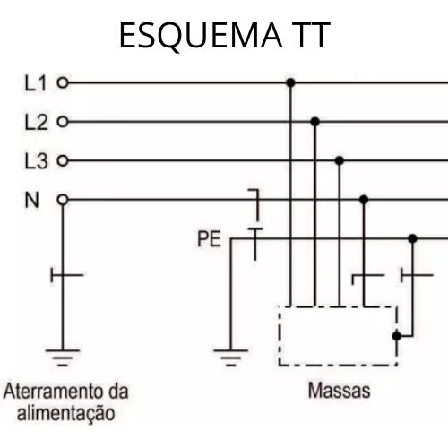
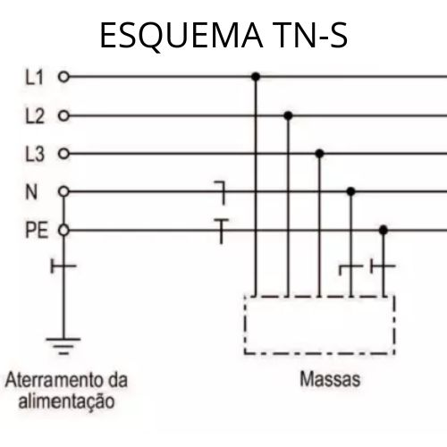
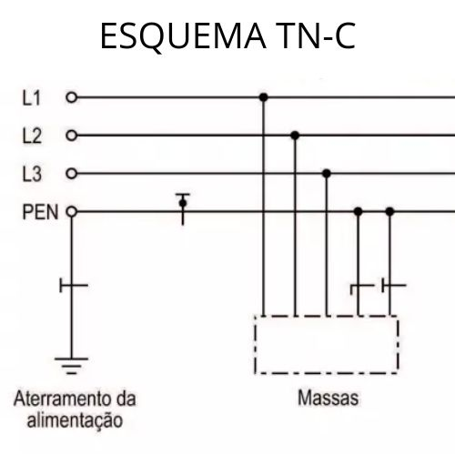
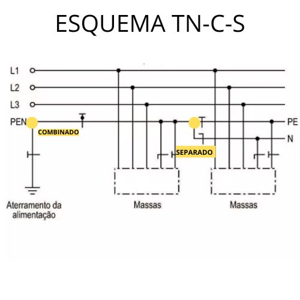
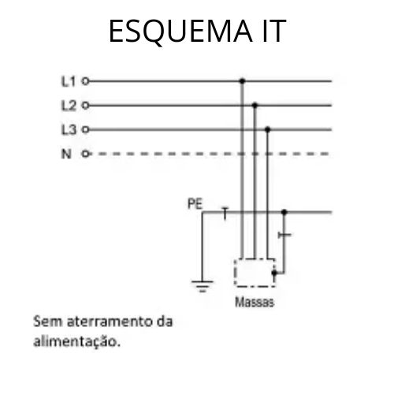
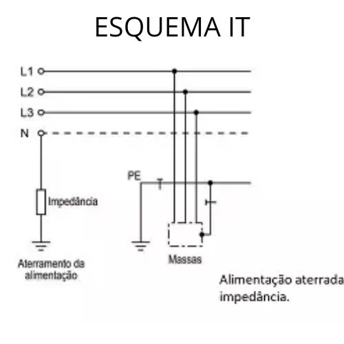

Aterramento
Os sistemas de aterramento TT, TN e IT foram desenvolvidos ao longo do tempo para melhorar a segurança e a eficiência das instalações elétricas. Cada sistema tem suas especificidades e é escolhido de acordo com a necessidade de proteção, continuidade de serviço e estabilidade elétrica da instalação. Implementar um sistema de aterramento adequado é fundamental para garantir a segurança das pessoas, a proteção dos equipamentos e a eficiência energética.
Sistema TT (Terra-Terra)
Origem e Evolução
Origem: O sistema TT surgiu como uma solução prática e segura para proteger instalações elétricas residenciais e rurais. Ele foi desenvolvido para atender às necessidades de segurança e eficiência à medida que o uso da eletricidade se tornava mais comum.
Evolução: Com o avanço das normas de segurança elétrica e a crescente compreensão dos riscos associados à eletricidade, o sistema TT foi aprimorado para garantir maior proteção contra choques elétricos.
Estrutura e Funcionamento
Neutro da Fonte de Alimentação:
Aterramento na Subestação: No sistema TT, o neutro da fonte de alimentação (por exemplo, o transformador da concessionária de energia) é aterrado na subestação elétrica. Isso cria uma referência de terra no ponto de geração de energia.
Aterramento Local:
Partes Metálicas Expostas: As partes metálicas expostas das instalações do consumidor (como carcaças de eletrodomésticos e caixas metálicas de distribuição) são conectadas a um sistema de aterramento local. Esse sistema de aterramento local é independente do aterramento da subestação.
Eletrodo de Terra: Um eletrodo de terra (como uma haste de cobre enterrada no solo) é utilizado para conectar as partes metálicas à terra. Esse eletrodo deve ter uma baixa resistência elétrica para garantir a eficiência do sistema.
Funcionalidade
Proteção Contra Choques Elétricos: O principal objetivo do sistema TT é proteger contra choques elétricos. Se ocorrer uma falha de isolamento, fazendo com que uma parte metálica exposta se torne energizada, a corrente de falha fluirá através do caminho de baixa resistência até a terra, minimizando o risco de choque.
Dispositivos de Proteção: Disjuntores diferenciais (DR) ou interruptores diferenciais residuais (IDR) são utilizados para detectar falhas à terra. Esses dispositivos monitoram a corrente elétrica e desligam o circuito se detectarem uma diferença entre a corrente que entra e a corrente que sai, indicando uma falha à terra.
Estabilidade Elétrica: O sistema TT ajuda a estabilizar a tensão elétrica, fornecendo um ponto de referência seguro para a operação dos dispositivos elétricos e eletrônicos.
Exemplos Práticos
Residências Rurais: Em áreas rurais, onde a infraestrutura elétrica pode ser menos desenvolvida, o sistema TT é comum por sua simplicidade e eficácia em proteger os habitantes e seus equipamentos.
Pequenas Instalações Comerciais: Pequenos estabelecimentos comerciais também utilizam o sistema TT para garantir a segurança dos clientes e dos funcionários.
Vantagens e Desvantagens
Vantagens: Simples de Implementar: Relativamente fácil de instalar e manter, especialmente em áreas com pouca infraestrutura.
Eficaz na Proteção: Oferece uma boa proteção contra choques elétricos e falhas de isolamento.
Desvantagens: Dependência da Qualidade do Solo: A eficácia do sistema depende da resistência do solo ao redor do eletrodo de terra. Solos com alta resistência podem reduzir a eficiência do aterramento.
Necessidade de Manutenção: O eletrodo de terra e as conexões precisam ser periodicamente inspecionados e mantidos para garantir a continuidade e a eficácia do sistema.
Sistema de Aterramento TN (Terra-Neutro)
Origem e Evolução
Origem: O sistema TN foi desenvolvido para melhorar a segurança e a eficiência das instalações elétricas em ambientes industriais e urbanos, onde é necessário um sistema mais robusto.
Evolução: Com o crescimento das cidades e a industrialização, a necessidade de sistemas elétricos seguros e eficientes levou ao desenvolvimento e aperfeiçoamento do sistema TN.
Estrutura e Subtipos
O sistema TN tem três subtipos principais: TN-S, TN-C e TN-C-S. Vamos explorar cada um deles:
TN-S (Terra Neutro-Separado):
Estrutura: O condutor neutro (N) e o condutor de proteção (PE) são separados ao longo de toda a instalação.
Funcionamento: O neutro da fonte de alimentação é aterrado na subestação, e um condutor de proteção separado é utilizado para conectar todas as partes metálicas expostas à terra.
TN-C (Terra Neutro-Combinado):
Estrutura: O neutro e o condutor de proteção são combinados em um único condutor (PEN) ao longo de toda a instalação.
Funcionamento: O neutro da fonte de alimentação é aterrado na subestação, e o condutor PEN combina as funções de neutro e proteção.
TN-C-S (Combinado e Separado):
Estrutura: Combina os métodos TN-C e TN-S. O neutro e o condutor de proteção são combinados (PEN) em parte da instalação e separados em outra.
Funcionamento: O neutro da fonte de alimentação é aterrado na subestação. O condutor PEN é usado inicialmente e, em algum ponto da instalação, é separado em condutores neutro (N) e de proteção (PE).
Funcionalidade
Proteção Contra Choques Elétricos: Em todos os subtipos, o sistema TN protege contra choques elétricos. Em caso de falha de isolamento, a corrente de falha flui através do caminho de baixa resistência até a terra, acionando dispositivos de proteção como disjuntores.
Dispositivos de Proteção: Disjuntores diferenciais (DR) e disjuntores de sobrecorrente são usados para detectar falhas e cortar a alimentação elétrica, protegendo tanto as pessoas quanto os equipamentos.
Estabilidade Elétrica: O sistema TN proporciona um ponto de referência estável para a tensão elétrica, garantindo a operação segura e eficiente dos dispositivos elétricos e eletrônicos.
Necessidade
Segurança Pessoal: Protege contra choques elétricos, garantindo a segurança dos ocupantes das instalações.
Proteção de Equipamentos: Reduz o risco de danos a equipamentos devido a falhas elétricas e surtos de tensão.
Conformidade com Normas: Seguir as normas de aterramento é essencial para estar em conformidade com os regulamentos de segurança elétrica, especialmente em instalações comerciais e industriais.
Exemplos Práticos
Indústrias: As instalações industriais frequentemente utilizam o sistema TN-S para garantir uma separação clara entre o neutro e o condutor de proteção, oferecendo uma proteção robusta contra falhas.
Edifícios Comerciais: O sistema TN-C-S é comum em grandes edifícios comerciais, onde a flexibilidade e a eficiência são necessárias.
Vantagens e Desvantagens
Vantagens:
Robusto e Confiável: Oferece alta proteção contra falhas elétricas e é adequado para grandes instalações.
Flexibilidade: O sistema TN-C-S oferece a combinação de vantagens dos sistemas TN-C e TN-S.
Desvantagens:
Complexidade de Instalação: Pode ser mais complexo e caro de instalar devido à necessidade de condutores adicionais (no caso do TN-S).
Risco de Falha no TN-C: Se o condutor PEN for danificado, pode haver um risco aumentado de falhas.
Sistema de Aterramento IT (Isolado Terra)
 Origem e Evolução
Origem: O sistema IT foi desenvolvido para situações onde a continuidade do serviço é crucial e a segurança elétrica é primordial, como em hospitais, centros de dados e instalações industriais sensíveis.
Evolução: Com o avanço da tecnologia e a necessidade de sistemas elétricos mais seguros e confiáveis, o sistema IT foi aprimorado para garantir que uma única falha à terra não cause a interrupção do serviço.
Estrutura e Funcionamento
Neutro Isolado:
Descrição: No sistema IT, o ponto neutro do transformador não é diretamente aterrado ou é aterrado através de uma alta impedância. Isso significa que não há uma conexão direta entre o neutro e a terra, ao contrário dos sistemas TT e TN.
Impedância: Em algumas variações, uma alta impedância (resistor ou indutor) é colocada entre o neutro e a terra para limitar a corrente de falha à terra.
Aterramento das Partes Metálicas Expostas:
Descrição: As partes metálicas expostas das instalações do consumidor são conectadas a um sistema de aterramento local. Esse sistema é independente do ponto neutro do transformador.
Eletrodo de Terra: Similar aos outros sistemas, um eletrodo de terra é utilizado para conectar as partes metálicas à terra, garantindo a segurança dos ocupantes.
Funcionalidade
Continuidade de Serviço: O principal benefício do sistema IT é que ele permite a continuidade do serviço mesmo em caso de uma primeira falha à terra. A corrente de falha à terra é limitada, permitindo que a instalação continue operando até que a falha seja corrigida.
Proteção Contra Choques Elétricos: Embora a corrente de falha à terra seja limitada, dispositivos de proteção como disjuntores diferenciais (DR) e monitores de isolamento são usados para detectar e sinalizar falhas.
Monitoração Contínua: Sistemas IT geralmente incluem monitores de isolamento contínuo (IMD) que verificam constantemente o estado de isolamento do sistema e alertam sobre qualquer degradação ou falha.
Necessidade
Continuidade de Operação: Ideal para ambientes onde a interrupção do serviço não é aceitável, como hospitais, centros de dados e algumas indústrias.
Segurança Elétrica: Proporciona alta segurança elétrica ao limitar a corrente de falha à terra, reduzindo o risco de choques elétricos.
Detecção Precoce de Falhas: Os monitores de isolamento contínuo permitem a detecção precoce de problemas, facilitando a manutenção preventiva e reduzindo o risco de falhas catastróficas.
Exemplos Práticos
Hospitais: Nos hospitais, a continuidade do serviço elétrico é crucial para a operação de equipamentos médicos vitais. O sistema IT garante que uma falha à terra não cause uma interrupção imediata.
Centros de Dados: Centros de dados utilizam o sistema IT para garantir a continuidade da operação dos servidores e sistemas de TI, minimizando o risco de perda de dados e interrupções de serviço.
Indústrias Sensíveis: Indústrias químicas, petroquímicas e outras instalações sensíveis utilizam o sistema IT para manter a operação contínua e segura, mesmo em caso de falhas elétricas.
Vantagens e Desvantagens
Vantagens:
Continuidade de Serviço: Permite a operação contínua mesmo em caso de uma primeira falha à terra.
Alta Segurança: Limita a corrente de falha à terra, reduzindo o risco de choques elétricos.
Detecção Precoce: Monitores de isolamento permitem a detecção precoce de problemas, facilitando a manutenção preventiva.
Desvantagens:
Complexidade e Custo: A instalação e manutenção de um sistema IT podem ser mais complexas e caras devido aos requisitos de monitoramento e proteção.
Requer Monitoramento Contínuo: A eficácia do sistema depende do monitoramento contínuo do isolamento, necessitando de equipamentos adicionais e treinamento.